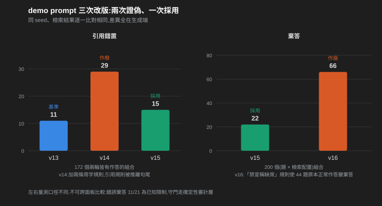

English ｜ 繁體中文
SelectRAG — 用實驗選型,而非用信仰選型
Choosing a RAG Configuration by Controlled Experiment on a Single RTX 4090
模擬 Solutions Architect 最常收到的客戶問題——「我們該用哪種 RAG 配置?」—— 在單卡消費級 GPU 上用受控對照實驗回答:一次只動一軸、其餘全部釘死, 最終交付一份架構決策備忘錄(該文件本身就是 SA 的交付物格式)。
設計概念
這個專案不拼檢索排行榜分數,而是拼選型方法論——每個「該不該上」的問題都用對照實驗回答,結論寫成 trade-off 而非冠軍。三個核心:
- 規劃五軸、完成三軸:完成檢索策略(A)、推論引擎(B)、數值格式(C)三軸,一次只動一軸、其餘釘死;RAG 範式(D)與 fine-tune(E)列為範圍外,理由見「範圍與後續」。
- 評測地基先行:100 題人工判定真值、content hash 凍結、一行指令可重跑;沒有基準,禁止宣稱「優化了」。
- 誠實揭露:預期會贏但輸了的組合、被證據推翻的假設、調參的過擬合風險——全部寫進備忘錄,不只挑好消息。
專案簡介
- 領域:繁體中文醫療公開文件問答(健保給付規定、藥品仿單、支付標準、公告)——延續醫療護城河,全公開、無 PHI。
- 語料:8,029 chunks(CSV 6,350 / PDF 1,660 / HTML 19),結構優先切塊 + 長度上限。
- 評測:recall@k 與 hit@k 並列(多等價真值下 recall 被稀釋,hit 回答「答案有沒有被拿到」),以不變量
hit == (recall > 0)互鎖;指標模組經變異測試(45/45 killed)。
系統架構
政府公開文件(PDF / CSV / HTML)
│ 結構優先切塊 + doc_title 回填
▼
8,029 chunks(JSONL)
│
▼
A 軸 檢索:BM25 / bge-m3 / RRF hybrid / + bge-reranker-v2-m3
│ reranker 分數低於門檻 → 不呼叫 LLM、直接拒答
▼
B/C 軸 生成:vLLM 或 TensorRT-LLM × bf16 / FP8 / AWQ / GPTQ-Int4
│ (Qwen2.5-7B-Instruct,單張 RTX 4090)
▼
計分:100 題凍結評測集(recall@k / hit@k / MRR)
+ Qwen2.5-14B faithfulness judge + 確定性審計層
使用技術
| 類別 | 技術堆疊 |
|---|---|
| 檢索 | BM25(純標準庫自實作,CJK bigram + ASCII 詞斷詞)、bge-m3 dense、RRF hybrid、bge-reranker-v2-m3;另評估 NVIDIA NIM reranker |
| 推論 | vLLM 0.22.1、TensorRT-LLM 1.2.1、Qwen2.5-7B-Instruct(bf16 / FP8 / AWQ / GPTQ-Int4)、NVIDIA ModelOpt(FP8 校正) |
| Judge | 本機 Qwen2.5-14B faithfulness judge(結構化輸出),兩個方向皆經人工審計 |
| Demo | Gradio 雙欄對照 |
| 語料前處理 | pypdf(釘選 6.16.2)、自寫 HTML 正文抽取、雙套中文標題體系解析、NFKC 正規化 |
| 評測框架 | 凍結 eval set(content hash + 壞資料一律 raise)、recall@k / hit@k / MRR、一行指令重跑 |
| 品質工程 | pytest + hypothesis(property-based)、mypy strict、ruff、變異測試 162 錨點(含 property 子集獨立驗證)、pip-audit;單一入口 tools/gauntlet.sh |
| 硬體 / 環境 | 單張 RTX 4090(GPU 軸)+ 雲端 CPU(語料、baseline、調參);Python 3.11、pip 釘選 |

結論:三軸各選哪一格(2026-09-18)
| 軸 | 推薦 | 關鍵數字 | 最無聊但最穩 |
|---|---|---|---|
| A 檢索 | hybrid(BM25 + bge-m3,RRF)+ bge-reranker-v2-m3 | recall@10 0.903 → 0.973、recall@3 0.808 → 0.941;代價:單卡與生成共用時每題檢索 13 ms → 1501 ms | BM25 + 文件脈絡調參:零 GPU、每題 13 ms、recall@10 0.903 |
| B 引擎 | 先做 FP8,再談引擎 | vLLM vs TensorRT-LLM 差 ≤ 10%;FP8 ×1.4–1.7 | vLLM bf16:pip 一行、無需轉換 |
| C 格式 | vLLM + GPTQ-Int4(官方預量化) | 吞吐 ×2.36(1000 vs 424 tok/s)、權重 5.3 GiB、faithfulness 在 judge 下與 bf16 不可分辨 | vLLM bf16 |
三軸疊起來:「hybrid + reranker 檢索、vLLM 跑 GPTQ-Int4」是單卡上的答案;比起最穩配置,多養一個向量索引、一個 cross-encoder、一份量化權重,換到前 3 筆召回率 +0.13 與生成吞吐 ×2.36。
| 格式 | 來源 / kernel | 權重 GiB | KV cache tokens | c=1 延遲 p50 / p95 | c=8 tok/s | 長輸出 c=8 tok/s | vs bf16(c=8) |
|---|---|---|---|---|---|---|---|
| bf16 | 官方 @ a09a3545 | 14.29 | 113,488 | 0.73 / 1.28 s | 424 | 406 | ×1.00 |
| FP8 | ModelOpt 自校正 512 | 8.17 | 223,632 | 0.52 / 1.00 | 610 | 614 | ×1.44 |
| AWQ (W4A16) | 官方 @ b250375, awq_marlin | 5.29 | 273,808 | 0.32 / 0.56 | 1000 | 915 | ×2.36 |
| GPTQ-Int4 | 官方 @ e9c932ac, gptq→marlin | 5.27 | 274,224 | 0.34 / 0.58 | 1000 | 920 | ×2.36 |
C 軸:同一張 4090、同一份 100 題 prompt,vLLM 內四種數值格式的吞吐、延遲、權重與 KV cache 容量。W4A16(AWQ / GPTQ)是本專案最大的單一加速來源。
三個反直覺的發現
- 輸出逐字改變 ≠ 品質下降。bf16 → FP8 的 greedy 輸出只有 51% 逐字相同,→ GPTQ 只剩 25%;但 faithfulness judge 看到的差異在噪音內。兩次實證,量化的「品質代價」要用有據與否來量,不能用一致率。
- 引擎不是變因,數值格式才是。vLLM 與 TensorRT-LLM 同模型同卡差 ≤ 10%;FP8 給 ×1.4–1.7,W4 給 ×2.36。TensorRT-LLM 還載不了 HF 格式的 AWQ / GPTQ——「格式綁引擎」是實測到的第一個硬限制。
- judge 的 κ 是被校準集撐起來的。隨機抽 30 題 κ 0.845;按判定難度分四層重抽 42 列,同一個 judge 只剩 0.488。針對九筆錯型加四條明文規則,42 筆判定一筆未變;拆成三個子問各自問,8 筆翻對 3。最後承認極限:judge 只能當相對比較用,寫進備忘錄的適用邊界。
| 品質 / 一致性(對 vLLM bf16) | bf16 | FP8 | AWQ | GPTQ |
|---|---|---|---|---|
| faithfulness (judge v2) | 0.959 (121) | 0.951 (122) | 0.938 (129) | 0.960 (125) |
| contradicted | 0.041 | 0.049 | 0.062 | 0.040 |
| 拒答題數(100 題) | 3 | 3 | 1 | 3 |
| 對 bf16 逐字一致率 | — | 0.51 | 0.27 | 0.25 |
| 含簡體題數 / 單題最大佔比 | 2 / 0.032 | 1 / 0.167 | 9 / 0.227 | 6 / 0.133 |
C 軸品質表:faithfulness、拒答數、對 bf16 的逐字一致率、簡體字元佔比(語言漂移,W4 放大 3–4.5 倍)。
Demo:同一題,兩種配置並排
Gradio 雙欄介面:左右各選一個檢索 preset,同一題並排顯示 top-3 chunk 與 vLLM(GPTQ-Int4)串流回答。綠框是 eval set 人工判定的真值,黃框是只有本欄撈到的 chunk——選型差異不靠數字,一眼看到。純邏輯進 gauntlet 變異層,UI 層以 --check 真跑驗證;三個模型同卡 VRAM 23,9xx / 24,564 MiB。

b1-q05:兩欄 top-2 都命中真值但順序相反,第三筆各自撈到不同文件(黃框)。
兩道防線。①引用:prompt 要求每句標 [段落編號],確定性層核對有效 / 越界 / 是否引到真值——100 題 × 2 配置遵循率 100%、零越界,真值在 top-3 時引到它的比例兩邊都 0.90。但編號存在不等於內容有據:再算一層「句子 3-gram 被所引段落覆蓋率」並人工複核 23 條低覆蓋句後,發現覆蓋率不能當品質分數——覆蓋率 0 可能是忠實改寫,0.351 那筆卻是錯藥命中、0.484 那筆是因果倒置。它只留作「這句需查證」的旗標。真正的數字是:74 條引用句裡 11 條在所引段落找不到依據,而且這是下界(只查了低覆蓋的部分)。兩個檢索配置的編造數相當,檢索做好不會自動讓生成忠實。②拒答:reranker top-1 分數低於門檻不送 LLM。門檻用 100 題 + 60 題語料外題(含 19 題刻意誘撈)網格搜尋:reranker 側語料外在 0.103 以上全部拒答、高原 0.03–0.59,取中點 0.308。為了回答「門檻是不是只對這 100 題成立」,再做 5 折交叉驗證:五折搜出的門檻完全相同(0.3076),held-out 誤拒 0.010、正確拒 1.000,零折找不到高原。BM25 側則相反——擴到 60 題後高原完全消失,交叉驗證五折有三折搜不到門檻、平均正確拒只有 0.383。「最穩配置沒有可校準的信心」因此不是判斷,是量出來的。

b2-q05(Metronidazole 飲酒):左欄 BM25 撈到的三段全是 Allopurinol 仿單(藥名盲),模型仍寫出一句「飲酒會引發過敏反應」並引 [1][3]——把別的藥的副作用套過來。逐字覆蓋 0.26 < 0.5,句首 ⚠ 標出需查證;右欄 hybrid 撈到真值,覆蓋 0.57 無標記。尾行「診斷旗標,非品質分數」是固定聲明:覆蓋率只能當「這句要查」的旗標,無標記也不代表已驗證。

語料外題:右欄 reranker 0.000 < 0.308,零 LLM 呼叫直接拒答;左欄 BM25 撈到三段不相干條文,模型靠 prompt 規則答「參考資料未提及」並照樣標了引用。已知限制:錯撈但語意相近的題,reranker 一樣有信心(3 題中 2 題 > 0.85),門檻救不了。
生成品質審計:讓看不見的錯型現形
覆蓋率與引用核對之上,再加一層確定性審計工具(全部不進分數,只把嫌疑列排到人工視線前):①必要成分命中——多成分題(答案分散在兩個代碼、點數+是否含特材)用人工核准的成分清單(16 題 36 成分)逐一比對,禁止表述分「保護型」(「每日2粒」假性滿足「2粒」)與「懲罰型」(整題答到別的藥,整題歸零);②棄答可見化——棄答句原本被句級分析整句跳過,每輪有 20~30 個組合從表上消失;補上棄答列與「真值最佳名次」欄後量到:21 筆棄答中 11 筆是錯誤棄答,正確段落就在模型引用的 context 裡;③藥名對照——量化模型會把英文藥名寫成不存在的中文字串(字元層漂移),比對「所引段落有、句子沒照抄」的拉丁詞直接標出。
審計層反過來量測 prompt 改版的真實效果——三次改版,兩次被量測證偽:v14 同時加兩條用字規則,meta 前言歸零但引用錯置 11→29(引用規則被推離 system 句尾);v15 只留一條格式約束並把引用規則放回句尾,引用錯置回落 15,採用;v16 加「不得宣稱未提及」的自我檢查規則,44 題原本正常作答變成拒答——對 7B 量化模型,這類 meta 指令的實際作用是字串促發而非行為檢查。結論收斂成一句:規則能收斂輸出格式,不能新增檢查行為。

同 seed、檢索結果逐一比對相同,差異全在生成端;左右面板量測口徑不同,不可跨面板比較。
審計的對象也包括 judge 本身。C 軸「量化不降品質」的結論靠 14B judge 的 faithfulness 分數,而用它做格式間比較有一個前提:judge 的誤差對每個格式一樣大。這個前提一開始只是假設,後來改用人工逐句審計兩個方向來量。一個方向是 judge 判「矛盾」的句子裡,有多少其實沒錯;另一個方向是它判「有據」的劑量/數值句裡,放過了多少錯誤。bf16、AWQ、GPTQ 三格式的結果很接近。放過的 9 筆錯誤是同一型:字面都在段落裡,關係錯了,例如每日與每次互換、公告日當成實施日;其中一筆是日劑量少了 4 倍。另外把簡體句轉成繁體重判,16 條只有 1 條改判,而且方向相反,排除了「量化格式因簡體漂移被低估」這個反向機制。

每句都由人工對照段落判定,三格式審計程序相同;FP8 未審。右圖為正則篩出的子集,只能當下界。
方法定位與已知限制
誠實揭露:①所有檢索數字為同一 100 題上的上界估計,無 held-out;②faithfulness judge κ 0.488,錯型明列(改寫句判反、單位錯置放行、相鄰條文誤歸),只作四格式相對比較;③AWQ / GPTQ 校正資料為官方所用,與自行校正的 FP8 不同源;④NV-Embed-v2 與釘選的 transformers 不相容、TensorRT-LLM × W4 不可載入,列誠實區;⑤錯誤棄答 11/21(正確段落在 context 內仍答「未提及」),prompt 治療經實驗證偽,守門走確定性審計層。備忘錄 §7 共 9 條「預期會贏但輸了的組合」。
範圍與後續
- D 軸(RAG 範式)、E 軸(fine-tune)範圍外:預算用罄時依立案約定先砍 D;E 軸需要可信的絕對品質量尺,現有 judge 給不了。兩者的前置都是 judge 第二階段(長回答原子主張 + citation 正確率)。
- 後續:KV cache 量化、TensorRT-LLM 的 ModelOpt-AWQ 路線、棄答型主張走「對象歸屬」拆問(前置實驗 2/2)。
開發歷程
開發過程不是「一路成功」,而是一連串「假設 → 驗證 → 誠實修正」。幾個關鍵節點:
① 直覺方案被證據推翻:heading_path 救不了漏檢
漏檢歸因顯示「答案關鍵詞不在正文」,直覺是把標題路徑加進索引。動工前查證推翻了命題——缺的藥名不在標題路徑,只在文件首行。方向改為 doc_title 回填,對照實驗 3 個目標漏檢題翻正 2 個 + 1 個意外收穫;若未查證,會做出一個對照不出差異的無效實驗組。
② 變異測試抓出「單邊不變量」盲點
hit@k 的三條 property 不變量(≥recall、單調、值域)全數通過,但對 property 子集單獨重跑變異測試時,「永遠回報命中」的錯誤實作居然存活——單邊界限擋不住失效方向。補上雙邊鎖定 hit == (recall > 0) 才殺死。
③ 真值標註的工具鏈陷阱
對照表摘錄截斷讓「出題來源」被誤判為不含答案;肉眼看似全形的測試字元實際是 ASCII(輸入鏈偷偷正規化),讓一個測試空轉、靠變異存活才揭露。兩者都以「全文查證 + 逃逸字元寫死」修復,流程逐批演進。
④ 同一條規定出現在 5~7 個 chunk——單一正解撐不住
第四批兩道題因語料重複條文而喪失鑑別度(13 個標註差異中占 10 個)。沉澱為固定規則:出題前先掃「答案句出現次數」,>2 次即改問唯一值並驗證唯一性。
⑤ NIM 時間盒:第一次判錯根因,第二次推翻
NIM reranker 容器一啟動就 CUDA error 500,第一個兩小時時間盒判定「WSL2 環境層不可行」停損;第二個時間盒發現根因是 Docker Desktop 太舊,更新即通過。時間盒有用,但停損判定要留可被推翻的空間。
⑥ 逐字命中前置層:先量再做,量完發現收益比想像小
以為「主張是語料原句就直接判 supported」能吃掉一半 judge 誤判;動手前對校準表量 3-gram 覆蓋率分布,發現只改一個數字的負例覆蓋率仍 0.7 以上、零誤放門檻下只接走 1/34。仍做成零誤放的安全層,但定位從「主力」降為「短路」。
⑦ 承認 judge 的極限
分層校準把 κ 從 0.845 打回 0.488 後,prompt 改版零槓桿、拆問只翻對 3/8。規則能補「沒查」,補不了「查了判反」;最後把 judge 定位改為相對比較,錯型寫成適用邊界,而不是找一個更好看的數字。
⑧ 在別處驗證過的規則,搬過來就反效果
「禁宣稱缺席」成對規則在更大的模型上是驗證過的成功模式,直接移植到 7B 量化模型上卻讓 44 題原本正常作答的題變成拒答——成功經驗攜帶著它的適用範圍(模型規模),搬家時範圍不會自動跟過來。判定不需要任何人工複核:拒答原本能答的題,無論新回答內容如何都是退步,機械比對定案,一小時內回退。
資料與合規
- 語料全部為政府機關公文書(著作權法第 9 條不受著作權保護);非政府文件已從語料與 git 歷史徹底移除。
- 無任何真實病歷 / 個資 / PHI;本專案為技術展示用途,非醫療建議工具。
- 語料檔不隨 repo 散布(gitignore),eval set 僅含題目與 chunk id 參照。